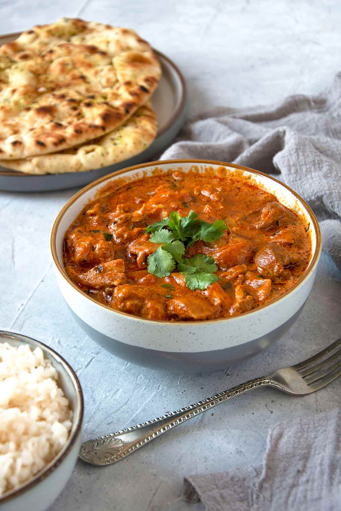

ButterChicken:

Ingredients:
For the Marinade:
500g boneless chicken pieces,
1/2 cup yogurt,
1 tablespoon ginger-garlic paste,
1 tablespoon red chili powder (adjust to taste),
1/2 teaspoon turmeric powder,
Salt to taste.
For the Gravy:
2 tablespoons butter,
1 tablespoon oil,
2 large onions, finely chopped,
1 tablespoon ginger-garlic paste,
2 large tomatoes, pureed,
1 tablespoon tomato paste (optional, for extra richness),
1 tablespoon red chili powder (adjust to taste),
1 teaspoon garam masala,
1 teaspoon coriander powder,
1/2 teaspoon cumin powder,
1/2 teaspoon turmeric powder,
1/2 cup heavy cream,
Salt to taste,
Water as needed.
For Garnish:
Fresh coriander leaves, chopped.